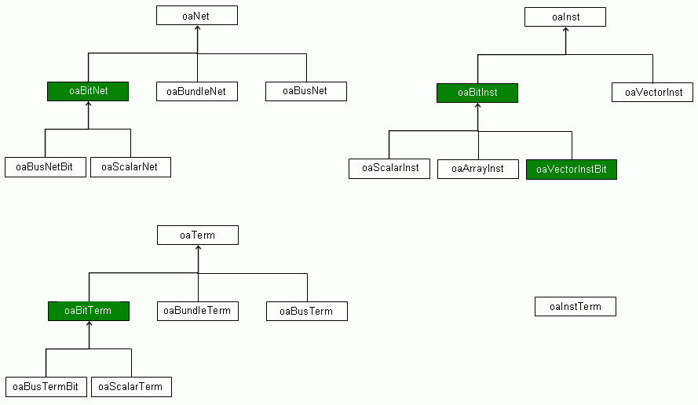
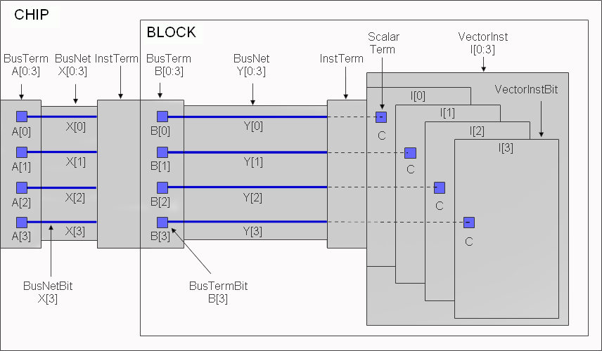
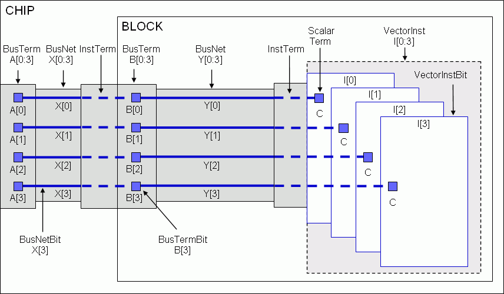

|
 |
 |
||||||
|
|
|
||||||
The OpenAccess connectivity model has been enhanced in the following areas:
See also: Understanding Logical Connectivity in the Programmers Guide.
The new bitwise connectivity functionality extends the OpenAccess data model to provide a complete, explicit, scalarized view of the connectivity in a design to support complete data interoperability between bus-aware and implementation applications.
Bitwise connectivity let's an application look at the connectivity of a database either as single-bit nets or as busses and bundles. Bitwise connectivity supports
OpenAccess 2.2 introduces base classes for single-bit objects in order to preserve type-safety. This is done consistently for nets, insts, and terms. The following figure addresses the block domain, but the corresponding objects exist in the module and occurrence domains as well.

Vector instances cannot overlap in range. For example, the vector instance I[0:3] can be represented either as the vector I[0:3] or as I[0], I[1], I[2], I[3]. This has implications for the masters of the instances. I[0:3] can have only one master, but each individual bit I[0], I[1] … I[3] can potentially have different masters.
Navigation through hierarchy interfaces is now more consistent. It is easier to perform a single-bit traversal of a multi-bit net through an InstTerm, into the correct bit of a multi-bit terminal, and on to the correct bit of the connected multi-bit net of the lower level cell.
In the figure, grey objects are multi-bit objects and blue objects are single-bit objects. In a logical design flow, the connectivity and structure of this design is specified using bus ranges and vector instances. There is only one BusTerm at the Chip level and it’s name is A[0:3]. This BusTerm connects to a single BusNet X[0:3] which, in turn, is connected to a single InstTerm.
At this stage in the design, the individual bits are implicit. You can perform a “find” on A[0] and X[0] and traverse their connectivity. However, these objects are implicit and they will not be returned by iterators unless the containing collection was obtained with the oacInstTermIterAll or the oacNetIterAll flags.

When it is time to implement the design (by assigning physical locations to instances, adding routes, and so forth), you need to consider the bit-wise connectivity of this multi-bit design. To do so, you must scalarize the design. The scalarize function converts implicit single-bit objects to explicit single-bit objects. In addition, explicit multi-bit objects are converted to implicit multi-bit objects by the scalarize function.
After running scalarize, the blue objects are the explicit objects. You can now trace the connectivity from A[0] to X[0] through an InstTerm, and into B[0] to Y[0] through another InstTerm, then into Terminal C of instance I[0]. You can still ask for the BusTerm A[0:3], and still find that it is connected to the BusNet X[0:3]. You can still walk across an InstTerm and through the BusTerm B[0:3], and into BusNet Y[0:3], even though those objects are now implicit objects.

Bit order enables the data model to represent the ascending and descending order for the complete range of indices for a given base name. For example, consider the following module declaration:
module M1(input A[0:3], input A[7:4]); wire A[0:7];
Note: The example uses Verilog syntax but does not adhere to Verilog semantics. It is intended to represent a database concept and not to represent legal Verilog.
The terminal bit order is implied by the names of the terminals. Separate busNets would be created for A[0:3] and A[7:4]. The bit order for the wire declaration can be captured on the oaBusNetDef.
In OpenAccess 2.2
Example
// Explicitly create the BusNetDef and assign a Descending bit order. // Skip this step if bit order is not needed. netDef = oaModBusNetDef::create(module, baseName, oacDescendingBitOrder);
// Create a BusNet. The order of the bits in the name is independent of // the bit order on the BusNetDef. net = oaModBusNet::create(module, baseName, 7, 0, 1); // Change the bit order of the BusNetDef to Ascending. This operation can // only be performed on explicitly created BusNetDef objects. It will not // affect the names of BusNet objects. netDef->setBitOrder(oacAscendingBitOrder);
Terminal ordering allows the data model to capture the original ordering of the ports declared in a Verilog module. Consider the following module declaration:
module INV(input A, output Y);
When you create instances of this module, you can connect explicitly by name, as shown in the first line below. However, there are times when you want to say something like, “connect n3 to the terminal that appears first in the module interface.” In order to properly bind the terminals, OpenAccess must record that A is the first terminal and Y is the second terminal. This information is stored on the Position attribute on oaTerm.
INV i1(.A(n1), .Y(n2)); // Connect by name
INV i2(n3, n4); // Connect by position
Verilog translators use terminal ordering to interpret connect by position, and to accurately recreate a module interface. Terminal position must be set explicitly by the application -- is not automatically set on newly created terminals. It is possible for terminals to not have a position.
Example
oaModScalarTerm *term = oaModScalarTerm::create(net, name); // Create the terminal term->setPosition(1); // Assign the terminal to a position
Setting a position on a terminal that already has a position or using the same position on two terminals generates an exception.
To get the position of a terminal:
oaUInt4 position = term->getPosition();
To change the position of a terminal, use unsetPosition() first.
You can create InstTerms by position as follows:
oaModInstTerm::create(net, inst, 1);
All InstTerms on the same instance must use the same connection strategy (either by name or by position).
InstTerms that are created by position do not have names.
oaModInstTerm::getTermName() will throw an exception if the InstTerm was created by position.
oaModInstTerm::usesTermPosition() can be used to detect whether an InstTerm was created by name or position.

Copyright © 2003-2010 Cadence Design Systems, Inc.
All rights reserved.